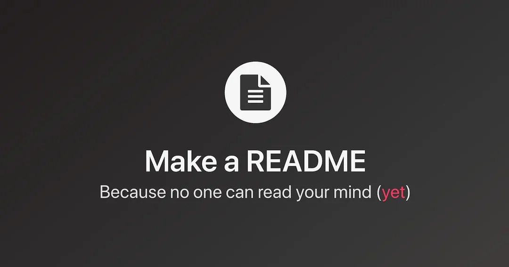
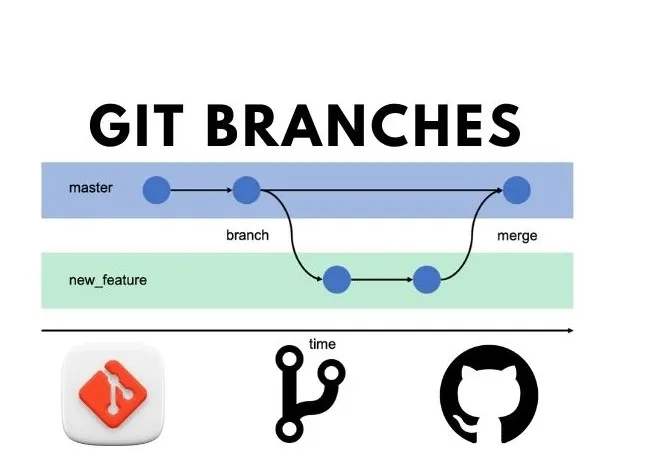

What is a README file?
A README file is a document included in a project that explains what the project is about, how to set it up, and how to use it. It helps other developers and users understand your work quickly.
Read moreDefinitions of README files, Wireframes, and Git branches.

A README file is a document included in a project that explains what the project is about, how to set it up, and how to use it. It helps other developers and users understand your work quickly.
Read more
A wireframe is a simple visual guide that represents the structure of a webpage or app. It shows where elements like buttons, text, and images will be placed and how users will interact with them.
Read more
A branch in Git is a separate line of development in a project. It allows you to work on new features or fixes without affecting the main code. Once ready, the changes can be merged back into the main branch.
Read more